Funwork 1
Contents
Evan Greene
2020-02-13
clear;
close all;
The Nonlinear Model
In Funwork Assignment 1, we created a nonlinear state-space model of a double inverted pendulum on a cart. That model is given by the equation
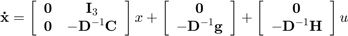
where 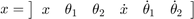
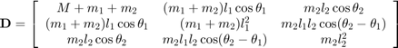
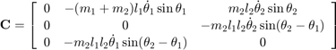
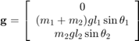
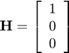
Or, in MATLAB code
% Establish constants M = 1.5; % kg m1 = 0.5; % kg m2 = 0.75; % kg l1 = 0.5; % m l2 = 0.75; % m g = 9.81; % m/s^2 m12 = m1 + m2; degrees = 180 / pi; % degrees / radian D = @(x) [M + m12, ... m12 * l1 * cos(x(2)), ... m2 * l2 * cos(x(3)); m12* l1 * cos(x(2)), ... m12* l1^2, ... m2 * l1 * l2 * cos(x(3) - x(2)); m2 * l2 * cos(x(3)), ... m2 * l1 * l2 * cos(x(3) - x(2)), ... m2 * l2^2 ]; C = @(x) [ 0, -m12 * l1 * x(5) * sin(x(2)), -m2 * l2 * x(6) * sin(x(3)); 0, 0, -m2 * l1 * l2 * x(6) * sin(x(3) - x(2)); 0, m2 * l1 * l2 * x(5) * sin(x(3) - x(2)), 0]; G = @(x) [0,-m12 * g * l1 * sin(x(2)), -m2 * g * l2 * sin(x(3))]'; H = [1 0 0]'; f = @(x, u) [zeros(3), eye(3); ... zeros(3), -D(x) \ C(x)] * x ... + [zeros(3, 1); ... -D(x)\G(x)] ... + [zeros(3, 1); ... D(x)\H]*u;
The Linear Model
We can linearize the non-linear state-space model about x = 0 as
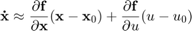
Or, in MATLAB code
% create symbolic variables so the Jacobian function will work. syms x [6 1] syms u % Calculate the jacobians of f with respect to J_f_x = jacobian(f(x, u), x); J_f_u = jacobian(f(x, u), u); % evaluate those jacobians at x = 0 and u = 0 to get our linearization. A_linear = double(subs(J_f_x, x, zeros(6, 1))) b_linear = double(subs(J_f_u, x, zeros(6, 1))) % we also need to find our output matrix C. In this case, the output is % just the first three elements of the state vector, so C_linear = [eye(3), zeros(3)];
A_linear =
0 0 0 1.0000 0 0
0 0 0 0 1.0000 0
0 0 0 0 0 1.0000
0 -8.1750 0 0 0 0
0 65.4000 -29.4300 0 0 0
0 -32.7000 32.7000 0 0 0
b_linear =
0
0
0
0.6667
-1.3333
0
Controller Design
Matlab's place function makes designing a controller for the system simple. It's just a matter of placing the poles.
We will place the poles at
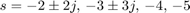
clear x u % poles = [-2 + 2j, -2 - 2j, -3 + 3j, -3 - 3j, -2, -3]'; poles = [-2 + 2j, -2 - 2j, -3 + 3j, -3 - 3j, -4, -5]'; K = place(A_linear, b_linear, poles) controller = @(x) -K*x;
K =
6.7334 -190.2083 222.6568 8.6412 -9.9294 38.3915
Observer design
% The |place| function is can also be used for designing observers. Again, % the only necessary part is pole placement. % % We will place the poles at % % $$ s = - 5 \pm 5j, \, -10 \pm 10j, -15, -20 $$ poles = [-5 + 5j, -5 - 5j, -10 + 10j, -10 - 10j, -15, -20]; % The initial state is the same as in the Funwork #1 assignment. x_init = [0 0.01 0.02 0 0 0]'; L = place(A_linear', C_linear', poles)' observer = @(xhat, x, u) (A_linear-L*C_linear)*xhat + ... b_linear*u + (L*C_linear*x); % now we can animate the combined controller-observer compensator. animate(f, controller, observer, x_init) pause
L =
35.0000 0 0
0 14.9994 5.0085
0 -4.9915 15.0006
300.0000 -8.1750 0
0 165.3773 -29.3752
0 -32.6453 132.7227
Adding an extra actuator to the DIPC model
If we wish to adjust our model to account for a second input in the form of a torque on the first joing, our equations of motion change very little. From the equation
only the value of 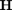 changes. The values of , 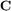 and 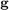 remain the same.
Animation
To easily animate the DIPC, we can create a function to save having to repeat work.
% we can check whether this function works by calling animate with % the controller set to zero and the observer set to the actual state. % controller = @(x) 0; % observer = @(xhat, x, u) f(x, u); % x_init = [0 0.01 0.02 0 0 0]'; % % animate(f, controller, observer, x_init) function animate(f, controller, observer, x_init) % inputs -- % f - the state-space function dx/dt = f(x, u) % controller - the function that relates the control input to the % estimated state, u = controller(~x) % observer - the function that relates the input and output to % the estimated state d~x/dt = observer(~x, x, u) % x_init - the initial state of the system. % outputs -- % None. Plays animation % close all open figures close all figure(1) % Set the paramters for Euler integration tfinal = 10; % seconds of animation dt = 0.001; % step size time = linspace(0, tfinal, tfinal / dt); % Set up arrays for logging data here logging = 1; if (logging) x_log = zeros(6, length(time)); x_est_log = zeros(6, length(time)); end % Set up the video recording % figure out the frame rate. % the step size is very small, so only update the graphics like once every % few frames. frameRate = 60; stepsPerFrame = 1 / (dt * frameRate); % flag for whether to record video. record_video = 0; % if the flag is true, create the movie if (record_video) % create movie v = VideoWriter('DIPC.avi'); v.FrameRate = frameRate; v.open() end % set up the current and estimated states x_current = x_init; x_estimated = zeros(size(x_current)); % initialize input u = 0; % Create graphical elements % Rotation matrices R1 = @(x) [cos(x(2)), -sin(x(2)); sin(x(2)), cos(x(2))]; R2 = @(x) [cos(x(3)), -sin(x(3)); sin(x(3)), cos(x(3))]; % the location of the first mass from the base. l1 = 0.5; l2 = 0.75; % m point1 = @(x) [x(1); 0] + R1(x) * [0; l1]; point1_current = point1(x_current); % the location of the second mass point2 = @(x) point1(x) + R2(x) * [0;l2]; point2_current = point2(x_current); % The size of the cart cart_width = 1; cart_height = 0.25; cart_position = [x_current(1) - 0.5*cart_width, -cart_height, ... cart_width, cart_height]; % a line for the floor floor = line('xdata', [-2, 2], ... 'ydata', [-cart_height, -cart_height], ... 'linewidth', 2, 'color', 'k'); % a rectangle for the cart cart = rectangle('Position', cart_position, ... 'EdgeColor', 'b', 'linewidth', 2); % the hinge of the pendulum base mass0 = line('xdata', double(x_current(1)), ... 'ydata', 0, ... 'linewidth', 3, 'color', 'r', 'marker', '*'); % line connecting the hinge and the first mass bar1 = line('xdata', [x_current(1), point1_current(1)], ... 'ydata', [0, point1_current(2)], ... 'linewidth', 2, 'color', 'b'); % the first mass object. mass1 = line('xdata', point1_current(1), ... 'ydata', point1_current(2), ... 'linewidth', 5, 'color', 'r', 'marker', '*'); % line connecting first and second masses bar2 = line('xdata', [point1_current(1), point2_current(1)],... 'ydata', [point1_current(2), point2_current(2)], ... 'linewidth', 2, 'color', 'b'); % second mass mass2 = line('xdata', point2_current(1), ... 'ydata', point2_current(2), ... 'linewidth', 3, 'color', 'r', 'marker', '*'); % graph settings axis([-2 2, -1.5, 1.5]) set(gca, 'dataaspectratio', [1 1 1]) axis on grid on box on for index = 1:length(time) - 1 % find the controller input u = controller(x_estimated); % estimate the state using the observer % find input as a function of the state in the last time step dx_estimated = observer(x_estimated, x_current, u); % Euler integration -- x[k] = x[k-1] + dx[k-1]/dt * dt x_estimated = x_estimated + dx_estimated * dt; % update plant model. dx_current = f(x_current, u); % find dx/dt x_current = x_current + dx_current * dt; % Perform logging here if (logging) x_log(:, index) = x_current; x_est_log(:, index) = x_estimated; end % allows the fps of the animation to be different from the euler % integration step size. if mod(index, stepsPerFrame) < .999 % update point1 and point2 point1_current = point1(x_current); point2_current = point2(x_current); % set all the graphical elements. cart_position = [x_current(1) - 0.5*cart_width, -cart_height, ... cart_width, cart_height]; set(cart, 'Position', cart_position); set(mass0, 'xdata', x_current(1), ... 'ydata', 0); set(bar1, 'xdata', [x_current(1), point1_current(1)], ... 'ydata', [0, point1_current(2)]); set(mass1, 'xdata', point1_current(1), ... 'ydata', point1_current(2)); set(bar2, 'xdata', [point1_current(1), point2_current(1)],... 'ydata', [point1_current(2), point2_current(2)]); set(mass2, 'xdata', point2_current(1), ... 'ydata', point2_current(2)) drawnow; if (record_video) frame = getframe; writeVideo(v, frame); end end end if (record_video) close(v); end if (logging) figure(2) for index = 1:6 subplot(2, 3, index) plot(time, x_log(index, :)) hold on % plot(time, x_est_log(index, :)) % hold off % legend("x", "\hat{x}") xlabel("time (s)"); ylabel(sprintf("x%d", index)); end end end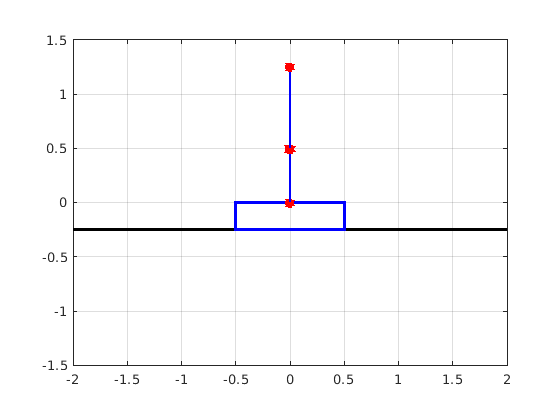 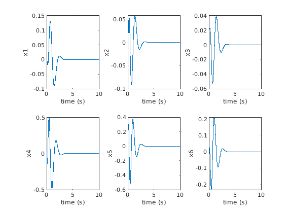